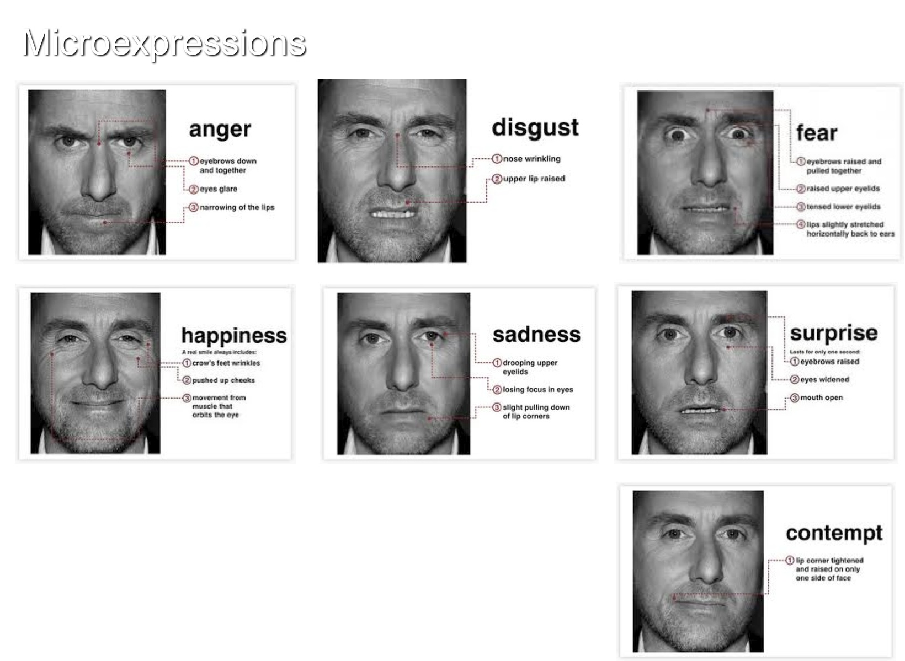

UNR Computer Animation Summer Camp
This website is intended for use by the students of the UNR computer animation camp.
Resources
Sintel Lite ModelBig Buck Bunny files
More Blender Hotkeys
Tracking Video (from BlenderGuru)

Links
- Blender (Tutorials)
- Blend Swap (Models)
- Blender Models
- Previous Student Videos
- Blender Guru: Tutorials
Hotkey Cheat Sheet
The controls are "context sensitive." This means that these buttons do different things depending on where your mouse is, what objects are selected, and what mode you are in. For example Left and Right arrow keys will move selected objects if you are Grabbing them, but if your mouse is on the Timeline, the arrow keys change which frame you are on.
| G | Translate |
| R | Rotate |
| S | Scale |
| X | Delete |
| A | Select All / Deselect All |
| Shift+A | Add object |
| Shift+D | Duplicate |
| I | Insert Keyframe |
| Ctrl+N | Fix Normals |
| Tab | Switch between Edit and Object modes |
| E | Extrude selection in edit mode |
| F | Add face/edge in edit mode |
| Right Arrow (over Timeline) | Forward a Frame |
| Left Arrow (over Timeline) | Backward a Frame |
| 0-9 | Show Layer 0-9 |
| Num 1,3,7 | Front, Side, Top View |
| Num 4,6 | Rotate Left, Right |
| Num 8,2 | Rotate Up, Down |
| Num 5 | Switch between Orthogonal and Proportional views |
| Num 0 | View from Camera |
| F12 | Render |
| X, Y, Z | Constrain (G,R,S) to global axis |
| XX, YY, ZZ | Constrain (G,R,S) to local Axis |
Authors and Contributors
Liesl Wigand @leezl
Richard Kelley @RichardKelley